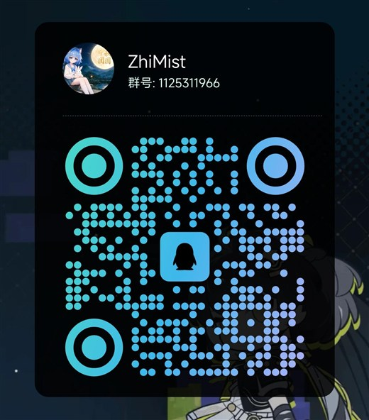

卷 一 · 陈 情
想加什么功能、想看什么内容、觉得哪里还能更好……任何点子都欢迎。 守法前提下，脑洞越大越好；不用先想「能不能做」，那是站长的事。
带 *星号 的是必填项；内容最多 1000 字。
不超过 20 字；不填也可以，站长不会追问。
说清楚「想要什么」和「为什么」就很好；最多 1000 字。
只用来回复你，不会公开展示；不超过 60 字。

群里也能直接说，比表单快；二维码点开是大图，方便长按保存。
提交即表示同意本站按 隐私说明 保存以上内容； 入库前会剔除 < > 字符。请勿填写身份证号、住址等敏感信息。
<
>
你的浏览器没有开启 JavaScript，表单暂时发不出去。可以直接发邮件到 2560803486@qq.com，把想法写进来。